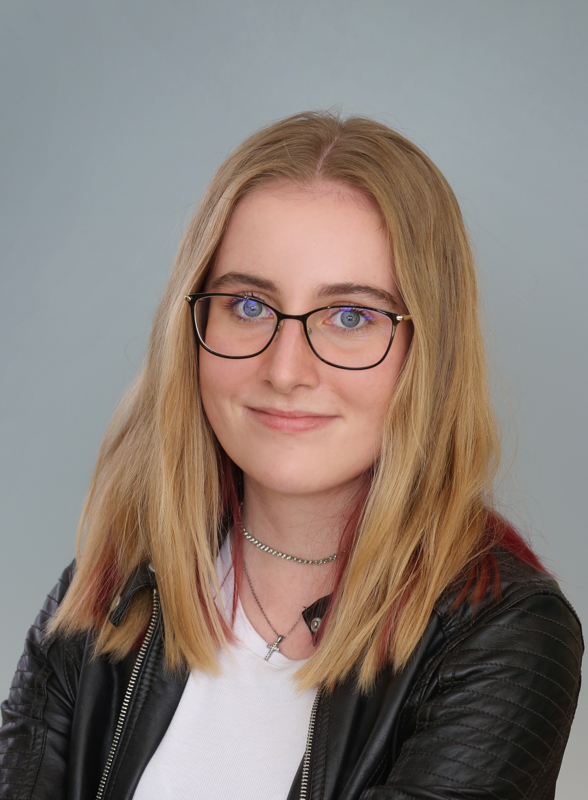

Masaryk University — Mgr. Astrophysics
Diploma thesis on tidal disruption events as a driver of Little Red Dots, supervised by Dr. Isobelle Lilian Mary Garland and Dr. Michal Zajaček.
First-year master's student mapping tidal disruption events and the radio galaxies.
From Bratislava, Slovakia

I am a first-year master's student in astrophysics at Masaryk University, focusing my research on tidal disruption events (TDEs) as a pathway to explain Little Red Dots. My bachelor's thesis was focused on compact and extended radio structures.
Outside of work, I’m passionate about sports and staying active. Whether it’s going to the gym, hiking, skating, skiing, or playing tennis, I’m always up for a challenge — even if it’s something I’ve never tried before. I also love going to concerts, reading, and I rarely miss a Formula 1 weekend.
Diploma thesis on tidal disruption events as a driver of Little Red Dots, supervised by Dr. Isobelle Lilian Mary Garland and Dr. Michal Zajaček.
Thesis: Why do not all radio galaxies form extended structures?
Investigated compact and extended radio sources using self-written Python analysis based on the ROGUE catalogue. Analysed host galaxy properties, luminosities, and star formation rates, creating diagnostic diagrams and applying statistical tests. Utilized Green Valley diagram to answer, if compact radio structures might be due to TDE.
Investigating luminosity profiles of galaxies hosting compact symmetric radio sources using HST archival imaging and GALFIT modelling to probe potential links to tidal disruption events. Built the workflow by independently adopting IRAF, GALFIT, TinyTim, and DCR for data reduction and fitting.
Investigating the possible existence of primordial black holes with Prof. Marek Abramowicz and Dr. Maciek Wielgus. Conducted literature review, refined a Python population synthesis code, and carried out calculations on neutron star collision scenarios.
Coordinated and delivered science communication at Researchers’ Night, Science and Technology Festival, Open Day, Gaudeamus, and more. Supported the production of podcast Rozhovory o vesmíre with background research and editing, and led astronomy workshops for youth programs including MjUNI.
Delivered front-line customer care, resolved issues, and maintained an engaging, well-organised bookstore environment while tailoring recommendations to individual readers.
Brno Observatory and Planetarium.
Ostrava Planetarium.
Led public telescope sessions and astronomy discussions in Bratislava at STARMUS 2024, representing Masaryk University.
Committed to regular donations and community health initiatives.